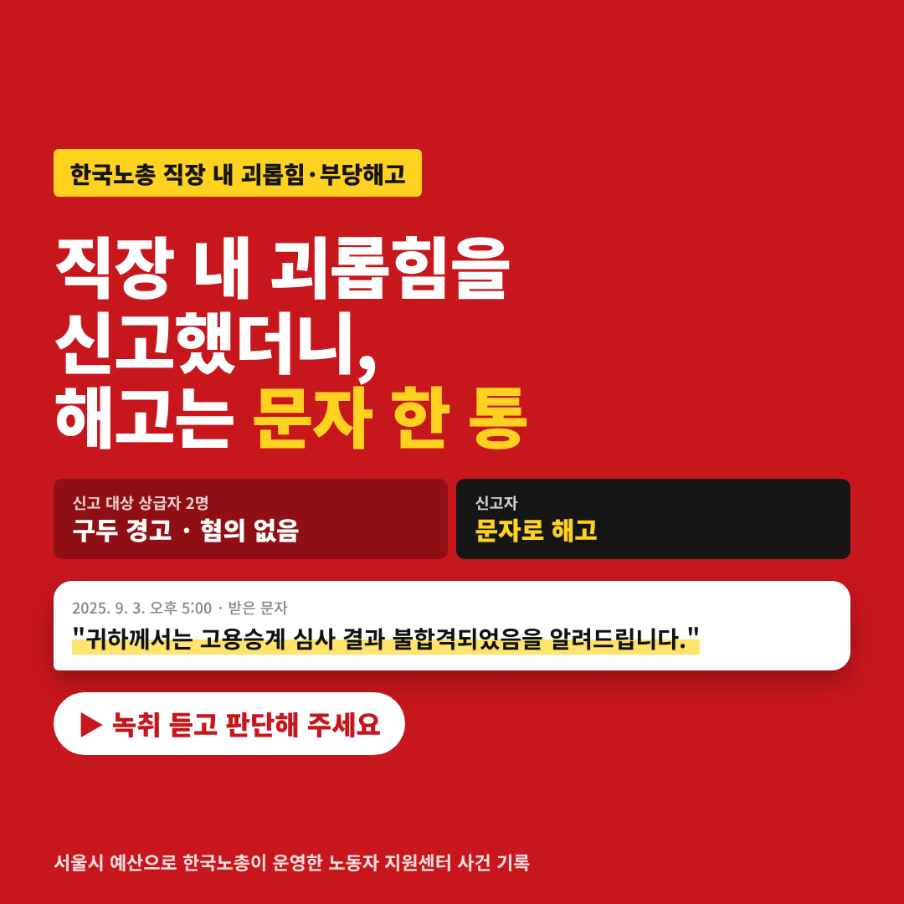

시민 여러분의 판단
녹취와 기록을 보셨다면 직접 판단해 주세요. 선택하면 SNS에 붙여 넣을 문장이 만들어집니다.
함께 알리기홍보 이미지와 링크
https://yky1234x.github.io/jeongdong/hk-harassment/



서울시가 예산을 대고 한국노총이 위탁 운영한 동남권 노동자종합지원센터. 이곳 팀장 유상석은 2024년 상급자 2명을 직장 내 괴롭힘으로 신고했고, 2025년 9월 3일 '고용승계 불합격' 문자를 받은 뒤 일자리를 잃었습니다. 문서와 녹취를 공개합니다. 직접 보고 판단해 주세요.
센터장의 메신저 열람·옆자리 착석 등을 구두로 신고 녹취신청인 주장
한국노총 인사위원회: 센터장 '징계외 처분(구두 경고)', 선임팀장 '혐의 없음' 신청인 주장
신청인 팀 사업비 약 2,700만 원 → 430만 원 신청인 주장
동남권센터 승계 희망자 중 유일한 탈락, 9. 30. 근로관계 종료 문서신청인 주장
서울지노위(2. 25.)·중앙노동위(11월) 모두 부당해고 구제신청 기각. 법원 소송 검토 중 판정
유상석 팀장이 대화 당사자로서 녹음한 2건입니다. 녹취록 원문을 그대로 싣고, 신청인이 문제 삼는 부분에 색을 칠했습니다. 신청인 본인의 날 선 발언도 빼지 않았습니다.
음성을 불러오는 중입니다.
녹취록은 받아쓰기 원문이라 오탈자가 있습니다. 관련자 실명은 직책으로 바꾸거나 ○○○로 가렸고, 음성은 목소리를 변조했습니다. 색 표시와 설명은 신청인 측 분류이며 기관이 판단한 내용이 아닙니다.
동남권 서울특별시노동자종합지원센터는 서울시 예산으로 한국노총이 위탁 운영한 취약노동자 지원기관입니다. 서울시 담당 부서는 노동정책과 취약노동자보호팀이었습니다. 문서
센터 노동권익개선팀은 직장 내 괴롭힘 상담을 맡았고, 신청인은 이 상담이 전체 상담의 30%를 넘었다고 적었습니다. 선임팀장은 입사 초기 법률지원팀장으로 직장 내 괴롭힘 상담을 맡았던 사람입니다. 신청인 주장
센터장이 개인 메신저 화면을 보고 삭제를 지시한 뒤, 의자를 끌고 와 신청인 옆에 앉았습니다. 다른 직원들이 있는 사무실이었습니다. 녹취 횟수는 녹취록 기준 신청인 측 집계
센터장실에서 센터장·선임팀장과 언쟁. 신청인은 방을 나올 때 안에서 "건방진 새끼"라는 말을 들었고, 되돌아가 묻자 센터장이 모른다며 손짓으로 나가라고 했다고 진술. 1. 31. 녹취에서 센터장은 "누구를 지칭한 적 없다"고 답함 신청인 주장녹취
센터장의 메신저 화면 열람·삭제 지시·옆자리 착석 (녹취 1) 녹취
선임팀장에게 "직장 내 괴롭힘"이라고 구두 신고. 이후 약 두 달간 조사·분리 조치가 없었다고 진술. 센터장은 이후 직원들 앞에서 사과했으나 신청인은 받아들이지 않음 신청인 주장
선임팀장이 직원들과 외부 상담 노무사가 있는 사무실에서 신청인의 과거 징계를 언급, 언쟁 (녹취 2) 녹취
한국노총에 공식 신고. 4. 8.(센터장 건)·8. 26.(선임팀장 건) 경위서 제출, 서울동부지청에도 진정 문서
한국노총 인사위원회: 두 건 모두 직장 내 괴롭힘의 정도가 약하다고 보고 센터장은 운영규칙에 없는 '징계외 처분(구두 경고)', 선임팀장은 '혐의 없음'. 신청인은 결과를 공식 통보받지 못했다고 진술 신청인 주장
서울동부지청은 선임팀장 건에서 사측 의견을 받아들였고, 지청 전문가 심의위원회도 같은 결론 신청인 주장
센터장이 전 직원 앞에서 "업무용 컴퓨터를 가져가 확인할 수 있다", "9월 이후 어떤 일이 벌어질지 알아서 판단하라"는 취지로 말함 신청인 주장
서울시장에게 진정(국민신문고): 관리·감독, 진상 조사, 분리 조치, 예산 감액 경위 조사 요청 문서
운영규칙에 없는 '징계외 처분' 신청인 주장
직장 내 괴롭힘 불인정 신청인 주장
전문가 심의위원회도 같은 결론 신청인 주장
2025. 9. 30. 근로관계 종료 문서
서울시가 정한 전체 사업비 안에서 센터가 팀별로 나눴고, 신청인이 1천만 원 수준을 요청했으나 받아들여지지 않았다고 진술 신청인 주장
서울시가 노동자종합지원센터를 서울노동권익센터로 통합하면서 동남권센터 위탁이 2025. 9. 30. 끝났습니다. 한국노총은 직원들에게 '고용승계 면접'을 거치게 했고, 신청인은 불합격 통보를 받았습니다.
면접 대상 명단에는 이미 사직서를 낸 센터장이 포함돼 있었고, 승계를 원한 직원 중 탈락자는 신청인 1명입니다. 같은 해 같은 양식의 계약서를 쓴 재무팀장은 승계됐습니다. 신청인 주장
| 항목 | 2020. 3. 7. 최초 | 2023. 3. 12. 갱신 |
|---|---|---|
| 사용자 | 한국노총 위원장 | 한국노총 위원장 |
| 계약기간 | 2020. 2. 10.~2022. 11. 26.(수탁기간) | 채용일자만 기재, 종료일 없음 |
| 직책 | 거점사업 팀장 | 지역협력팀 팀장 |
근거: 근로계약서 2건 문서
한국노총 내부 회의자료에 '도심·동남권센터 2025년 하반기 사업종료' 기재. 먼저 종료된 동북·서남권센터는 노동권익센터로 흡수(고용보장 80%)하고 팀원 승진 인사로 '이직 시 불이익 차단' 문서
서울시, 위수탁 협약 2025. 9. 30. 만료와 인수인계 일정 통보 문서
한국노총 서울지역본부가 고용승계 심사 서류 요청. 총연맹이 이력서·직무기술서·상벌확인서 제출 문서
선임팀장을 통해 직원 전원에게 사직서 제출 공지. 신청인은 제출하지 않음 신청인 주장
위원장 명의 면접 참석 지시 공문, 서울지역본부에서 면접 문서
'한국노총 서울지역본부' 명의 문자로 불합격 통보. 해고 사유·시기를 적은 서면은 받지 못함 문서신청인 주장
근로관계 종료 문서
수탁기관은 고용승계 비율 80% 이상, 위탁기간 중 고용 유지, 협약 만료 시 새 수탁기관으로의 승계에 최대한 협조 문서
센터장·선임팀장·팀장·팀원은 정원 직원, 정년 만 60세. 수탁기간에 묶인 계약직은 '정원외 직원'으로 별도 규정 문서
동남권센터가 '별도 채용과정 없이 센터 전직' 요청, 실무자 의견란 '부정의견, 채용 관련 서울시 지침 강화' 문서
심사 동의서 수신처 '한국노총 서울지역본부 의장', 면접 장소 서울지역본부, 참석 지시는 총연맹 위원장 명의 문서
노동위원회에서 한국노총이 낸 답변서의 주장과 신청인 측 반박을 나란히 놓았습니다. 노동위원회는 두 차례 모두 신청인의 구제신청을 받아들이지 않았습니다.
| 한국노총 주장 답변서 | 신청인 반박 재심이유서 |
|---|---|
| 위탁사업은 끝이 정해진 사업이라 2년을 넘겨 기간제로 쓸 수 있는 예외(기간제법 제4조 제1항 제1호)에 해당한다 | 노동 상담·권익 보호는 위탁이 두 차례 이어진 상시 업무다 |
| 2022. 11. 계약 만료 뒤 계속 일했으므로 같은 조건(위탁기간까지)으로 묵시적 갱신됐다 | 2023. 3. 새로 쓴 서면 계약서에서 종료일이 빠졌다 |
| 2023년 계약서는 표준 양식을 쓴 것이고 정규직 전환 심의는 없었다 | 그 양식은 정원 직원용이고 정원 직원 정년은 만 60세다 |
| 고용승계를 거부한 곳은 독립 단체인 서울지역본부다 | 답변서도 '산하 지역본부'로 적었고, 면접 참석은 위원장 명의로 지시했다 |
| 80% 기준에 맞춰 공정하게 면접했고 점수가 모자랐다 | 승계 희망자 중 탈락자는 신청인 1명이고, 신청인은 직장 내 괴롭힘 신고자다 |
| 위탁 종료로 근로계약이 자동 종료됐으므로 해고가 아니다 | 용역 종료를 이유로 한 근로관계 종료도 해고에 해당한다는 판례가 있다(대법원 2007다62840) |
| 조항 | 법의 내용 | 신청인이 문제 삼는 사실 |
|---|---|---|
| 제23조 | 정당한 이유 없는 해고 금지 | '고용승계 심사 불합격' 외 해고 사유 없음 |
| 제24조 | 경영상 해고의 요건 | 해고 회피 노력·협의가 없었음 |
| 제26조 | 30일 전 해고 예고 | 9. 3. 통보, 9. 30. 종료(27일) |
| 제27조 | 해고 사유·시기 서면 통지 | 문자메시지 통보 |
| 제76조의3 | 직장 내 괴롭힘 조사·조치 의무, 신고자 불리한 처우 금지 | 조사 지연, 구두 경고, 사업비 감액, 승계 심사 탈락 |
용역계약 종료 시 근로계약도 끝난다고 약정했더라도 이를 자동 소멸로 볼 수 없고 해고 제한 규정이 적용된다
위수탁 기간 만료 시 자동퇴직 조항이 있어도 근로계약의 자동 소멸 사유로 볼 수 없다(재심이유서 인용)
수탁기관은 특별한 사정이 없는 한 직전 위탁기간의 노동자를 우선 고용
시장은 매년 지도·점검하고, 위법·부당한 경우 시정 요구 또는 위탁 취소·정지 가능
서울지방노동위원회에 부당해고 구제신청 문서
서울지방노동위원회 기각(서울2025부해10102) 판정
중앙노동위원회 재심 신청, 10. 16. 심문회의 문서
중앙노동위원회 재심 기각(초심 유지) 판정
행정소송·민사소송 검토 중
신청인 측 부당해고 구제신청서·이유서(2025. 11. 27., 12. 9.), 중앙노동위원회 재심이유서(2026. 6. 2., 6. 4.), 근로계약서(2020. 3. 7., 2023. 3. 12.), 해고 통보 문자(2025. 9. 3.), 사건 경위서(2024. 4. 8., 8. 26.), 서울동부지청 진정서, 서울시장 앞 진정서(2025. 7. 14.), 녹취록과 녹음 2건(2024. 1. 31., 3. 22.)
한국노총 측 답변서(1)(2026. 1. 22.)·(2)(2026. 2. 12.), 사 제1~10호증(위수탁 협약서, 채용공고, 최초 근로계약 품의, 2023. 8. 회의자료, 서울시 공문, 고용승계 심사 공문, 센터 운영규정)
법령·지침 근로기준법, 기간제법, 서울특별시 행정사무의 민간위탁에 관한 조례·시행규칙, 민간위탁 노동자 근로조건 보호 가이드라인, 고용노동부 직장 내 괴롭힘 예방·대응 매뉴얼
모든 내용에 근거를 표시했습니다. '신청인 주장'은 유상석 측 서면과 진술이고, '한국노총 주장'은 답변서 내용입니다. 기관 결정은 '판정'으로 구분했습니다.
생년월일·주소·연락처·임금 금액·문자 발신번호, 양측 대리인과 노동위원회 담당자, 함께 심사받은 직원과 녹취 속 관련자의 실명은 가리거나 뺐습니다. 관련자는 직책으로만 적었습니다.
녹취 색 표시와 설명은 신청인 측 분류이며, 어떤 기관도 이를 직장 내 괴롭힘으로 인정하지 않았습니다. 사실과 다른 내용이 확인되면 바로 고치겠습니다.
녹취와 기록을 보셨다면 직접 판단해 주세요. 선택하면 SNS에 붙여 넣을 문장이 만들어집니다.
https://yky1234x.github.io/jeongdong/hk-harassment/
